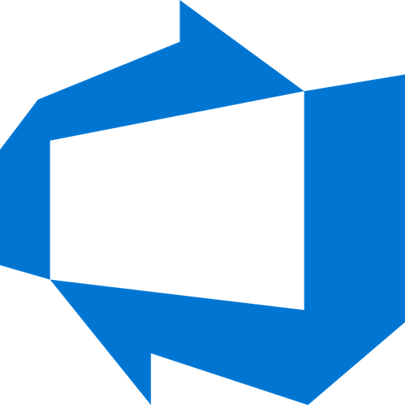
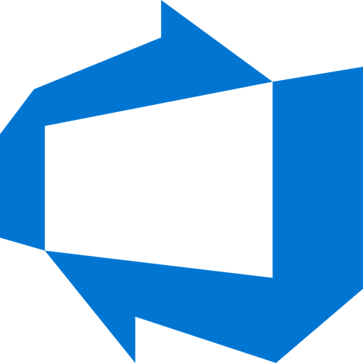

Oskar Markbäck Zeilon
.NET DEVELOPERProfil
Studerar till .NET utvecklare hos Jönköping university. Examen inom Geografiskt IT. Har ett geniunt intresse av att utvecklas inom .NET sfären.
Arbetslivserfarenhet
FEBRUARI 2022 - APRIL 2022
Fick i uppdrag att utveckla deras områdeskarta för boende. Resultatet går att se under Hsb gräslöken hemsida, under fliken boende
APRIL2021 — JUNI 2021
Mitt uppdrag bestod i att digitalisera vägnätet i åhus. Vägdatat användes för effektivare utträkningsmetoder gällande kostnad för inköp av material bland annat. Fick även i uppdrag att rita ut larmzoner åt räddningstjänsten i Hässleholm samt Kristianstad. Under denna period tog jag mig an ett sido projekt som resulterade i en webbkarta uppbygd av opensource ramverket origo.
FEBRUARI 2019 - NUVARANDE
Kör ut mat mellan kök och äldreboende med 8-pallars lastbil.
Utbildning
AUGUSTI 2022 - JUNI 2024
Webbutvecklare. NET
AUGUSTI 2020 - JULI 2022
Gick ut med VG.
MARS 2018 - MARS 2020
Läste upp gymnaset.